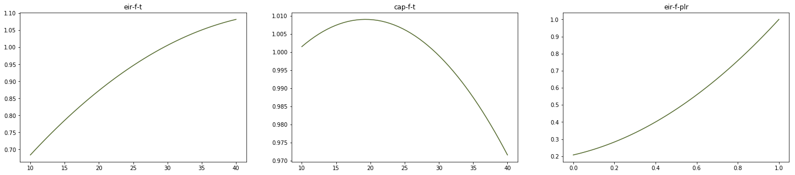

Quickstart Guide
This quickstart guide provides examples of how Copper can be used to generate simulation-ready sets of performance curves by either being imported as packaged or using its command line interface.
Installing Copper
Copper can be installed from PyPI by running the following command.
pip install copper-bem
Using Copper as a package
In this example we use Copper to generate chiller performance curves by importing Copper as a package in a Python script.
We start by importing the necessary packages:
import copper as cp
import matplotlib.pyplot as plt
Next, we define the chiller. In this example, the chiller is a 300 ton constant speed water-cooled screw chiller with a targeted efficiency of 0.650 kW/ton and an integrated part load value (IPLV) of 0.480 kW/ton. The chiller will be simulated using the entering condenser temperature model included in EnergyPlus and documented in the engineering manual. Copper assumes by default that the rated conditions follow AHRI Standard 550/590. Note: Curves can also be generated for AHRI Standard 551/591 or both 550/590 and 551/591.
chlr = cp.Chiller(
ref_cap=300,
ref_cap_unit="ton",
full_eff=0.610,
full_eff_unit="kW/ton",
part_eff=0.520,
part_eff_unit="kW/ton",
sim_engine="energyplus",
model="ect_lwt",
compressor_type="screw",
condenser_type="water",
compressor_speed="constant",
)
Then, we generate a set of curves for using Copper’s nearest_neighbor method:
set_of_curves = chlr.generate_set_of_curves(
vars=["eir-f-plr"], method="nearest_neighbor", tol=0.005
)
Finally, we plot the curves:
# Define plot and variables to plot
out_vars = ["eir-f-t", "cap-f-t", "eir-f-plr"]
fig, axes = plt.subplots(nrows=1, ncols=len(out_vars), figsize=(25, 5))
# Plotting space set of curves
chlr_perf_curves = cp.SetofCurves()
chlr_perf_curves.name = "Quickstart Guide Performance Curves"
chlr_perf_curves.eqp = chlr
chlr_perf_curves.curves = chlr.set_of_curves
chlr_perf_curves.plot(out_var=out_vars, axes=axes, color="darkolivegreen", alpha=1)
An example output would look like the figure below. The curves are plotted at rated chilled water temperature. In this example, the x-axis corresponds to the entering condenser temperature in degrees Celsius, and to the part load ratio.
We then verify that the set of curves that we generated actually corresponds to the targeted efficiencies.
print(
"Efficiency: {} kW/ton, IPLV: {} kW/ton.".format(
round(chlr.calc_rated_eff(eff_type="full"), 2),
round(chlr.calc_rated_eff(eff_type="part"), 2),
)
)
This returns Efficiency: 0.61 kW/ton, IPLV: 0.52 kW/ton.
The curves can now be exported for use in EnergyPlus:
chlr_perf_curves.export(fmt="idf", name=chlr_perf_curves.name)
Using Copper’s command line interface
Copper can be used via command line interface (CLI). A JSON file including the targeted equipment characteristics and functions to be called must be created and passed as an argument.
In this example we generate performance curves for a 300-ton constant speed water-cooled screw chiller with a targeted efficiency of 0.650 kW/ton and an IPLV of 0.480 kW/ton. The chiller will be simulated using the entering condenser temperature model included in EnergyPlus.
First, we create the JSON input file.
{
"actions": [
{
"equipment": {
"type": "Chiller",
"compressor_type": "screw",
"condenser_type": "water",
"compressor_speed": "constant",
"ref_cap": 300,
"ref_cap_unit": "ton",
"full_eff": 0.61,
"full_eff_unit": "kW/ton",
"part_eff": 0.52,
"part_eff_unit": "kW/ton",
"sim_engine": "energyplus",
"model": "ect_lwt"
},
"function_call": {
"function": "generate_set_of_curves",
"vars": ["eir-f-plr"],
"method": "nearest_neighbor",
"tol": 0.05,
"export_path": "./",
"export_format": "json",
"export_name": "Quickstart_Guide_Chiller",
"random_seed": 1
}
}
]
}
Next we let’s generate the curves using the CLI by running the following command in a command prompt:
copper run in.JSON
This produces a JSON file similar to the following, which provides all information related to the curves generated by Copper:
{
"Quickstart_Guide_Chiller": [
{
"out_var": "eir-f-t",
"type": "bi_quad",
"units": "si",
"x_min": -999,
"y_min": -999,
"x_max": 999,
"y_max": 999,
"out_min": -999,
"out_max": 999,
"ref_x": 6.666666666666667,
"ref_y": 29.444444444444443,
"ref_evap_fluid_flow": 0,
"ref_cond_fluid_flow": 5.439463472960298,
"ref_lwt": 6.666666666666667,
"ref_ect": 29.444444444444443,
"ref_lct": 34.611111111111114,
"coeff1": 0.4714919803545887,
"coeff2": -0.00034135585158081606,
"coeff3": -0.000697957200141703,
"coeff4": 0.02997434988897927,
"coeff5": -0.00028259585409552777,
"coeff6": -0.0003860001861457355
},
{
"out_var": "eir-f-plr",
"type": "quad",
"units": "si",
"x_min": -999,
"y_min": -999,
"x_max": 999,
"y_max": 999,
"out_min": -999,
"out_max": 999,
"ref_x": 1.0,
"ref_y": 0,
"ref_evap_fluid_flow": 0,
"ref_cond_fluid_flow": 5.439463472960298,
"ref_lwt": 6.666666666666667,
"ref_ect": 29.444444444444443,
"ref_lct": 34.611111111111114,
"coeff1": 0.22533063777829992,
"coeff2": 0.2127397264337366,
"coeff3": 0.5627140676879633
},
{
"out_var": "cap-f-t",
"type": "bi_quad",
"units": "si",
"x_min": -999,
"y_min": -999,
"x_max": 999,
"y_max": 999,
"out_min": -999,
"out_max": 999,
"ref_x": 6.666666666666667,
"ref_y": 29.444444444444443,
"ref_evap_fluid_flow": 0,
"ref_cond_fluid_flow": 5.439463472960298,
"ref_lwt": 6.666666666666667,
"ref_ect": 29.444444444444443,
"ref_lct": 34.611111111111114,
"coeff1": 0.9685131980886335,
"coeff2": -0.004964252905445898,
"coeff3": 0.0009250222553367286,
"coeff4": 0.0005571266682425939,
"coeff5": -8.731725051841458e-05,
"coeff6": 0.00042164491939888525
}
]
}